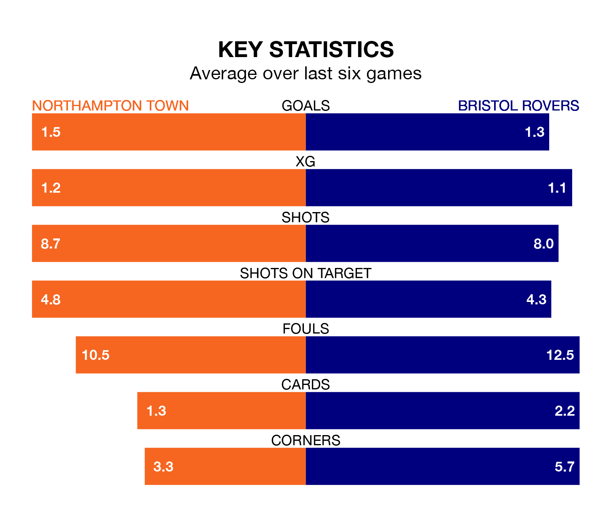

Northampton Town host Bristol Rovers on Saturday at the Sixfields Stadium in EFL League One.
In their last league match, on Tuesday, Northampton lost to Leyton Orient 4-3 away, with goals from Kieron Bowie, Marc Leonard and Tyreece Simpson.
Rovers won, 3-2 away at Stevenage, with Anthony Evans, Chris Martin and Luke Thomas on the scoresheet.
In the last 10 years, Northampton and Rovers have played each other on 12 occasions. Northampton won one of them, Rovers eight, and they drew three times.
On average, the Cobblers scored 0.8 goals and the Gas 2.2 in those matches.
Their last meeting was on October 28, when Rovers won 2-1 at home.
With 44 goals in 32 games so far this season, Rovers are scoring more than average in the league with 1.4 goals per game. But they are conceding more than average too, letting in 45 goals at a rate of 1.4 per game.
Northampton, meanwhile, are average scorers, with 1.3 goals per game. They have conceded 1.5 goals per game.
Town are in disappointing form in EFL League One, with one win and two draws from their last six games.
With three wins and three losses over that period, the Gas's form is better – they have taken nine points from 18, compared to the Cobblers' five.
The away side's Aaron Collins is among the league's most creative players, racking up nine assists in 30 appearances so far this season, and holding second spot in EFL League One's assist charts.
For the hosts, Mitchell Pinnock has set up the most goals, having laid on five assists in 31 games.
Rovers are 11th in the table after 32 games, of which they have won 12 and drawn seven, earning 43 points.
Northampton are two places behind Rovers in 13th, with 12 wins and five draws putting them on 41 points.
Updated: 12:06 (UTC), 15/02/24